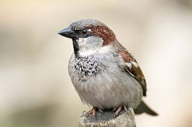
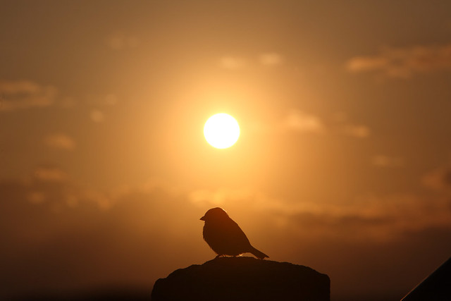

Aprender a volar

Acabo de ser testigo de una de las tantas pequeñeces en las que se plasma la inmensidad del mundo y nuestra comparativa insignificancia. Estaba caminando en el patio cuando un ave pasó aleteando y a gran velocidad cerca de mi, casi chocándose con mis piernas. Se trataba de un pichón de gorrión, ya con plumas, seguramente caído del nido en una de sus primeras lecciones de vuelo, y que había buscado refugio bajo el alero del techo en un costado de la casa.
El avechucho corrió (si es que se puede usar este término) hacia el centro del patio en su afán por alejarse de mí, con tal mala fortuna que fue visto por el perro guardián de la casa. El siberiano, ya con sus instintos a flor de piel, se avalanzó sobre la presa al tiempo que yo le ordenaba que no lo hiciera.
Tarde llegó mi voz, puesto que el gorrioncito ya se encontraba semi preso en una jaula de dientes. No obstante el can, obediente, lo soltó sin demora, y para nada grata fue mi sorpresa al ver que el pequeño emplumado se movía a los saltos sólo con el batir de sus alas, arrastrando sus patas como un peso muerto. Poco tiempo después moría sobre el cemento caliente bajo el sol del mediodía.
Actor secundario fue otro gorrión, presumiblemente la madre del primero, que intentó desesperada e infructuosamente alejar al agresor del pequeño a fuerza de chillidos y revoloteos.
No dejo de pensar que si no hubiese detenido al perro en su accionar, al menos el pichón se hubiera salvado de su penosa agonía. O tal vez si hubiese actuado con anterioridad, aunque esto último me parece más difícil dado la rapidez con que se desarrollaron los hechos.
Nadie tiene la vida comprada.
Y algunos, por injusto que parezca, la perderán incluso antes de aprender a volar.
